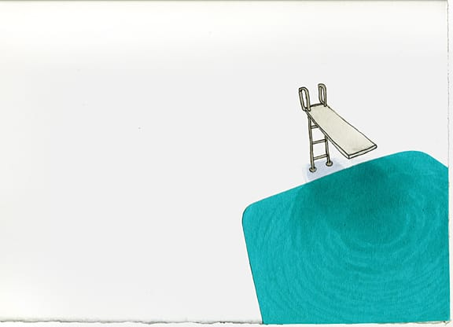
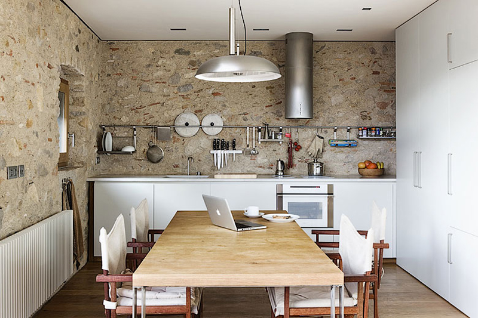

Две фичи сафари на айфоне
- Можно в поле для поиска написать текст и в попапе последним пунктом будет "искать на странице"
- Можно просто начать набирать новый адрес, а не нажимать крестик в инпуте для адреса.

Не знаю, что это за чувак, но каждый его пост просматриваю с огромным удовольствием)

Говорят, у него все книги так оформлены! Но к этой есть еще и короткометражный мультфильм.
Сайт с офигенскими обоями для айфонов :)

И еще немного бассейнов :)

На кухне должно быть светло и много места. Еще примеры приятного интерьерного дизайна.
Чувак музыку режет/клеит из роликов на ютубе. Круто!

Вдруг захотите мне что-то подарить и не будете знать что — подарите такую свинью-копилку :)

Оч приятный альбом.